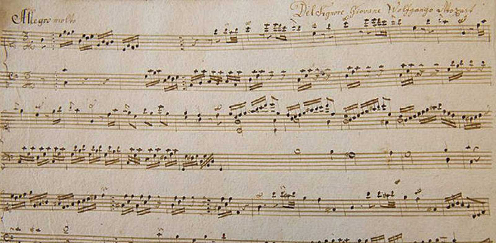
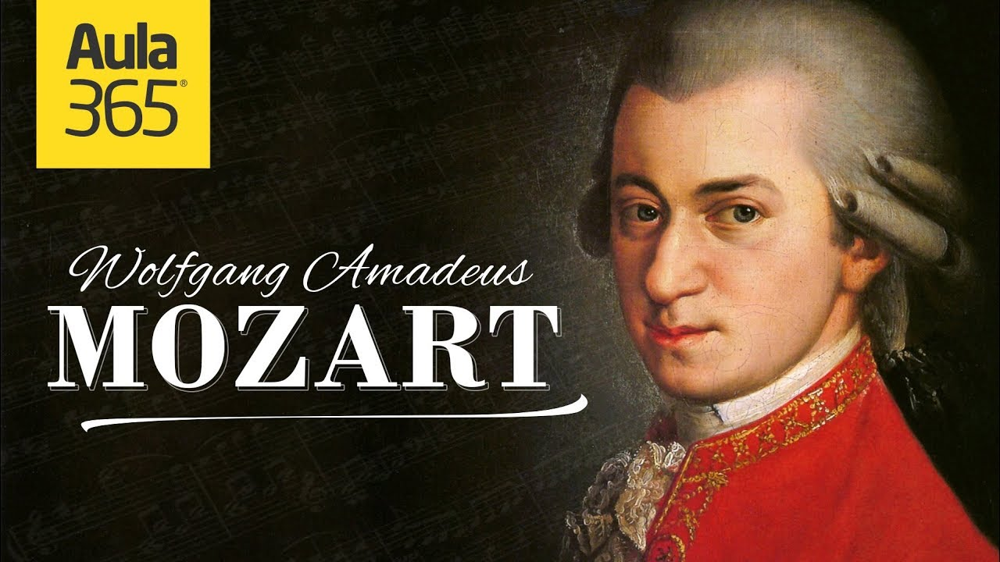

compositor

Johannes Chrysostomus Wolfgangus Theophilus Mozarta? (Salzburgo, 27 de enero de 1756-Viena, 5 de diciembre de 1791), más conocido como Wolfgang Amadeus Mozart, fue un compositor, pianista, director de orquesta y profesor del antiguo Arzobispado de Salzburgo (anteriormente parte del Sacro Imperio Romano Germánico, actualmente parte de Austria), maestro del Clasicismo, considerado como uno de los músicos más influyentes y destacados de la historia.
La obra mozartiana abarca todos los géneros musicales de su época e incluye más de seiscientas creaciones, en su mayoría reconocidas como obras maestras de la música sinfónica, concertante, de cámara, para fortepiano, operística y coral, logrando una popularidad y difusión internacional.
En su niñez más temprana en Salzburgo, Mozart mostró una capacidad prodigiosa en el dominio de instrumentos de teclado y del violín. Con tan solo cinco años ya componía obras musicales y sus interpretaciones eran del aprecio de la aristocracia y realeza europea. A los diecisiete años fue contratado como músico en la corte de Salzburgo, pero su inquietud le llevó a viajar en busca de una mejor posición, siempre componiendo de forma prolífica. Durante su visita a Viena en 1781, tras ser despedido de su puesto en la corte, decidió instalarse en esta ciudad, donde alcanzó la fama que mantuvo el resto de su vida, a pesar de pasar por situaciones financieras difíciles. En sus años finales, compuso muchas de sus sinfonías, conciertos y óperas más conocidas, así como su Réquiem. Las circunstancias de su temprana muerte han sido objeto de numerosas especulaciones y elevadas a la categoría de mito.
Según críticos de música como Nicholas Till, Mozart siempre aprendía vorazmente de otros músicos y desarrolló un esplendor y una madurez de estilo que abarcó desde la luz y la elegancia, a la oscuridad y la pasión —todo bien fundado por una visión de la humanidad «redimida por el arte, perdonada y reconciliada con la naturaleza y lo absoluto»—.1 Su influencia en toda la música occidental posterior es profunda; Ludwig van Beethoven escribió sus primeras composiciones a la sombra de Mozart, de quien Joseph Haydn escribió que «la posteridad no verá tal talento otra vez en cien años».2
Wolfgang Amadeus Mozart nació el 27 de enero de 1756 en Salzburgo, en la actual Austria, que en esa época era un arzobispado independiente del Sacro Imperio Romano Germánico. Fue el último hijo de Leopold Mozart, músico al servicio del príncipe arzobispo de Salzburgo. Leopold era el segundo maestro de capilla en la corte del arzobispo aunque fue un experimentado profesor. Su madre se llamaba Anna Maria Pertl. Debido a la altísima mortalidad infantil en la Europa de la época, de los siete hijos que tuvo el matrimonio solo sobrevivieron Maria Anna, apodada cariñosamente Nannerl, y Wolfgang Amadeus. Fue bautizado en la catedral de San Ruperto el día después de su nacimiento con los nombres de Joannes Chrysostomus Wolfgangus Theophilus Mozart; a lo largo de su vida firmaría con diversas variaciones sobre su nombre original, siendo una de las más recurrentes «Wolfgang Amadè Mozart».3
La casa natal de Mozart se encuentra en la Getreidegasse de la ciudad de Salzburgo. Se trata de una casa que actualmente cuenta con una gran cantidad de objetos de la época e instrumentos que pertenecieron a Mozart durante su niñez. Es uno de los lugares más visitados de Salzburgo y una especie de santuario para músicos y aficionados a la música de todo el mundo.4
Leopold componía y daba clases de música. El año del nacimiento de Wolfgang publicó un exitoso tratado para la interpretación del violín titulado Versuch einer gründlichen Violinschule. Después del nacimiento de Wolfgang abandonó todo, salvo las tareas propias de su cargo, para dedicarse de manera exclusiva a la formación de su hijo. Fue exigente como padre y como profesor y en todo momento estuvo al tanto de la formación de Wolfgang, para guiarlo como hombre y como artista.
Entre esas pequeñas piezas se encuentran el Andante para teclado en do mayor, Köchel Verzeichnis (KV) 1a, y el Allegro para teclado en do mayor, KV 1b.
Cuando Wolfgang Amadeus tenía cuatro años tocaba el clavicordio y componía pequeñas obras de considerable dificultad; a los seis, tocaba con destreza el clavecín y el violín. Podía leer música a primera vista, tenía una memoria prodigiosa y una inagotable capacidad para improvisar frases musicales.
Definitivamente no era un niño común. Su progenitor era un hombre inteligente, orgulloso y religioso. Creía que los dones musicales de su hijo eran un milagro divino que él, como padre, tenía la obligación de cultivar.5 Cuando el niño iba a cumplir seis años de edad, Leopold decidió exhibir las dotes musicales de sus hijos ante las principales cortes de Europa. Según los primeros biógrafos de Wolfgang, su padre «quiso compartir con el mundo el milagroso talento de su hijo...». Leopold creyó que proclamar este milagro al mundo era un deber hacia su país, su príncipe y su Dios, por lo que tenía que mostrarlo a la alta sociedad europea, ya que de otra manera él sería la criatura más ingrata.6
El biógrafo Maynard Solomon afirma que mientras Leopold era un profesor fiel a sus hijos, existen evidencias de que Wolfgang trabajaba duramente para avanzar más allá de lo que le enseñaban.7 Su primera composición impresa y sus esfuerzos precoces con el violín fueron por iniciativa propia y Leopold se vio fuertemente sorprendido. Padre e hijo tenían una relación muy estrecha y estos logros de niñez hicieron llorar de alegría a Leopold más de una vez.3
Finalmente Leopold dejó de componer cuando el excepcional talento musical de su hijo se hizo evidente.8 Él era el único profesor de Wolfgang en sus primeros años y le enseñó música, así como el resto de asignaturas académicas.
Composiciones
- Gran misa en do menor
- La flauta mágica
- Sinfonía n°40
- Sonata para pianro n°11
Otras composiciones interesantes
- Una broma musical
- Serenata n°10
- cosi fan tutte
- Ver más